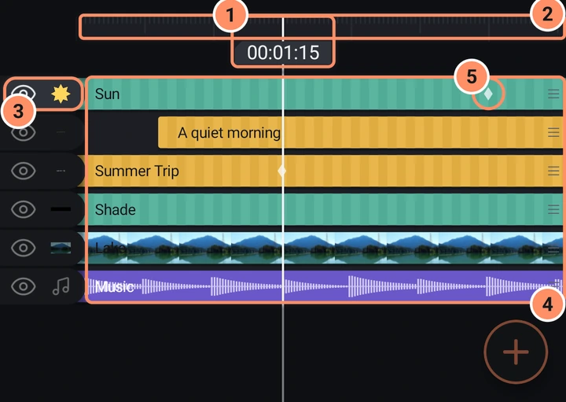
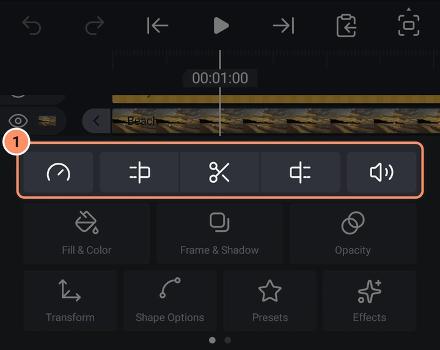

タイムライン
レイヤーを時間軸上のバーとして表示。スクラブ、トリム、移動、並べ替え、キーフレーム、ブックマーク、スナップに対応します。
タイムラインは再生バーの下にあるエリアです。各レイヤーは行で、レイヤーが存在する時間をバーで示します。
タイムラインの見方
- 再生ヘッドは中央にある固定の縦線です。コンテンツはその下をスクロールします。ルーラーの時間ピルには分、秒、フレームが表示されます。
- ルーラー。 高い目盛りは各秒を、短い目盛りは0.5秒とフレームを、ズームインの度合いに応じて示します。
- 行。 1レイヤーにつき1行で、手前のレイヤーが上に来ます。開いているグループの中では（図形、描画、マスクのグループを編集をご覧ください）、そのグループのレイヤーだけが並びます。左側の目アイコンでレイヤーの表示/非表示を切り替え（非表示のレイヤーは描画されず、音も出ません）、小さな画像でレイヤーを識別できます。
- バーの色。 通常のレイヤーは斜めストライプのティール、テキストレイヤーはアンバー、カメラレイヤーはクリムゾン、音声レイヤーは波形付きのバイオレットです。写真と動画は画像の帯を表示します。レイヤー名はバーに書かれます。
- ラベルの色。 レイヤーメニューでは、11種類のラベル色のいずれかでレイヤーをマークでき、バーに小さな色付きの角として表示されます。
- キーフレームのダイヤ。 バー上の小さなダイヤはキーフレームです。選択中のレイヤーでは大きくなります。プロパティやエフェクトを開いている間は、そのキーフレームだけが表示されます。キーフレームとイージングを参照してください。

ジェスチャー
| 目的 | 操作 |
|---|---|
| レイヤーを選択 | バーまたは行をタップします。 |
| レイヤーの表示/非表示 | 目アイコンをタップします。 |
| 選択を解除 | ルーラーまたは空のエリアをタップします。 |
| 再生ヘッドを移動 | どこでも左右にドラッグします。指を離しても少しの間動き続け、フレーム単位で止まります。 |
| レイヤーをスクロール | 上下にドラッグします。 |
| タイムラインをズーム | 2本指でピンチします。 |
| レイヤーをトリム | 選択してから、動かしたい端の丸いグリップをドラッグします。複数のクリップを選択しているときは、1つのグリップをドラッグすると、すべてのクリップの同じ端が動きます。 |
| レイヤーを時間方向に移動 | バーを長押しして持ち上がったら、ドラッグします。 |
| レイヤーの順序を変更 | 行の空いている部分（バーではないところ）を長押ししてから、上下にドラッグします。未選択の行の右端にある3本線をドラッグしてもかまいません。 |
| キーフレームを移動 | 選択中のレイヤーでダイヤを長押ししてから、横にドラッグします。 |
| 複数のレイヤーを選択 | 行の目アイコンまたは名前エリアを長押しして、上下にスライドします。 |
| ブックマーク | ルーラーの時間ピルをタップします。 |
バー上を普通にスワイプすると、再生ヘッドだけが動きます。これは意図的な仕様です。クリップを動かすにはまず長押しする必要があるため、クリップが誤って動くことはありません。
動画または音声クリップがファイルの終端に達すると、グリップが赤くなり、目盛りが付きます。これ以上長くすることはできません。クリップを長くするには、速度ツールで遅くしてください（写真、動画、速度を参照）。
スナップ
トリム、クリップの移動、キーフレームの移動は、再生ヘッド、ブックマーク、他のレイヤーやキーフレームの開始/終了にスナップします。スナップすると色付きの縦線と小さな振動で知らせます。振動は設定でオフにできます。
ブックマーク
ルーラーの時間ピルをタップすると、現在のフレームにブックマークを追加します。ピンクの旗で表示されます。同じ位置でもう一度ピルをタップすると削除されます。ブックマークはスキップボタンの停止位置とスナップポイントとして機能します。ビートをマーク（音声レイヤーのタイル、およびレイヤーメニューの項目）は曲のビートにブックマークを追加します。音声を参照してください。
選択中のレイヤーの下にあるツール
レイヤーを選択すると、下部にツールのグリッドが表示されます。最初の行には5つの小さなボタンがあります。
- 速度は動画と音声クリップのタイムリマッピングパネルを開きます。写真、動画、速度をご覧ください。
- 開始をトリムは、クリップが再生ヘッドで始まるようにカットします。
- 分割は、再生ヘッドでクリップを2つにカットします。2つ目の部分は1つ目の上に新しいレイヤーとして追加されます。
- 終了をトリムは、クリップが再生ヘッドで終わるようにカットします。
- 音量は、音声と動画の音量パネルを開きます。

再生ヘッドがクリップの外にある場合、同じボタンの意味が変わり、使えないボタンは非表示になります。クリップより前にあるときは、開始を再生ヘッドまで延長とクリップを再生ヘッドへ移動が表示されます。クリップより後にあるときは、クリップを再生ヘッドへ移動と終了を再生ヘッドまで延長が表示されます。クリップを移動すると、その開始（または終了）が再生ヘッドにジャンプします。
下にある大きなボタンはレイヤーツールです。